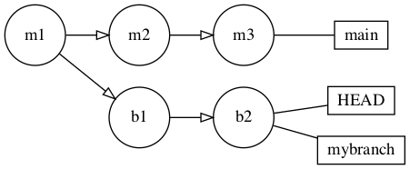
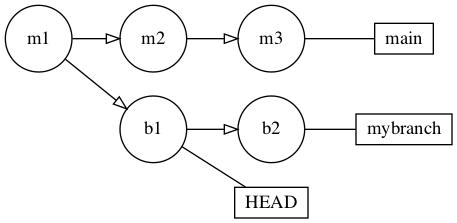
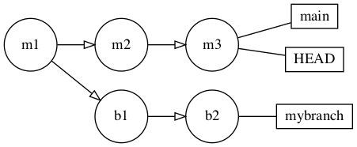
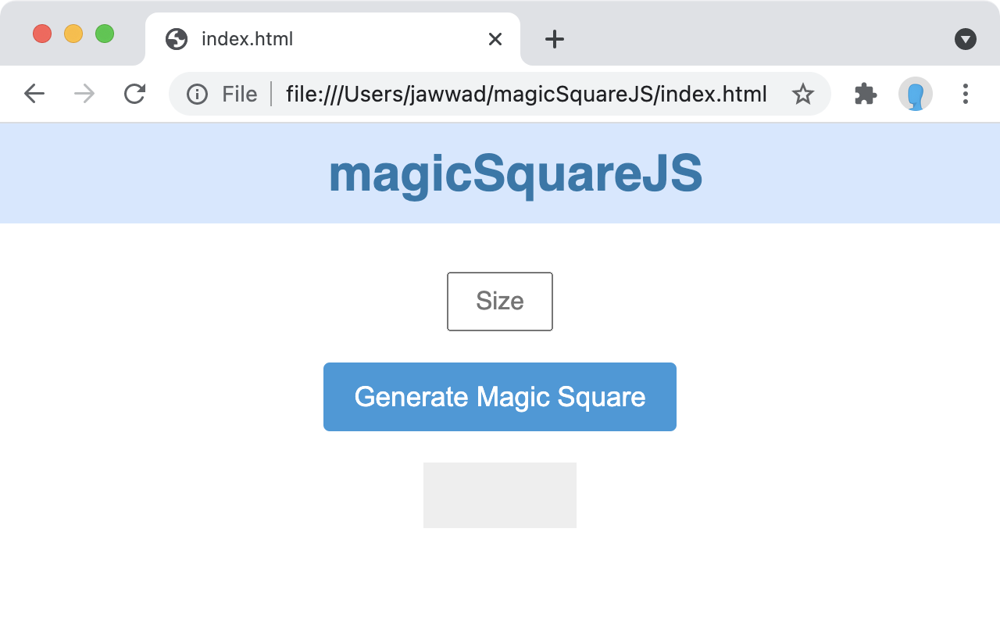
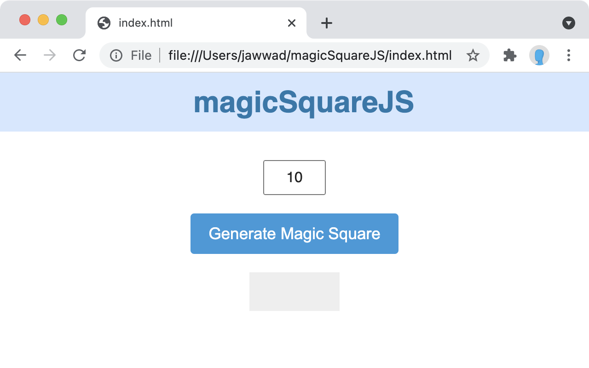
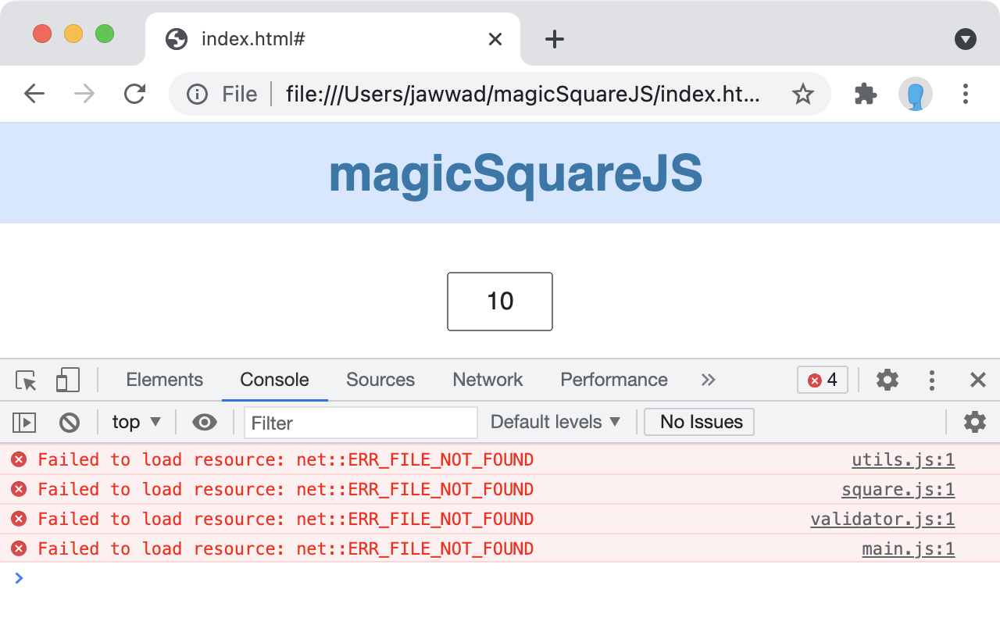
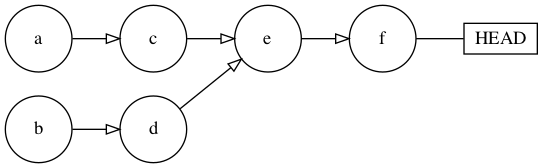

7.The Many Faces of Undo¶
One of the best aspects of Git is the fact that it remembers everything. You can always go back through the history of your commits with git log, see the history of your team’s activities and cherry-pick commits from other places.
But one of the most frustrating aspects of Git is also that it remembers everything. At some point, you’ll inevitably create a commit that you didn’t want or that contains something you didn’t intend to include.
While you can’t rewrite shared history, you can get your repository back into working order without a lot of hassle.
In this chapter, you’ll learn how to use the reset, reflog and revert commands to undo mistakes in your repository. While doing so, you’ll find a new appreciation for Git’s infallible memory.
Working with git reset¶
Developers quickly become familiar with the git reset command, usually out of frustration. Most people see git reset as a “scorched earth” approach to fix a repository that’s messed up beyond repair. But when you delve deeper into how the command works, you’ll find that reset can be useful for more than a last-ditch effort to get things working again.
To learn how reset works, it’s worth revisiting another command you’re intimately familiar with: checkout.
Comparing reset with checkout¶
Take the example below, where the branch mybranch is a straightforward branch off of main:

In this case, you’re working on main, and HEAD is pointing to the hash of the last commit on the main branch. When you check out a branch with checkout mybranch, Git moves the HEAD label to point to the most recent commit on the branch:

So checkout simply moves the HEAD label between commits. But instead of specifying a branch label, you can also specify the hash of a commit.
For example, assume that instead of checkout mybranch, you wanted to check out the commit just before the one referenced by HEAD — in this case, b1:

So your working directory now reflects the state of the repository represented by commit b1. This is a detachedHEADstate, which simply means that HEAD now points to a commit that has no other label pointing to it.
Note
This is a weird (but totally permissible) state from Git’s perspective. Git’s normal workflow is to either work from the tip of a branch, denoted by the branch’s name label, or to work from some other named label in the repository. A detached HEAD state is useful when you want to view the state of the repository at some earlier point in time, but it’s not a state you’d be in as part of a normal workflow.
You’ve seen that checkout simply moves HEAD to a particular commit. reset is similar, but it also takes care of moving the branch’s label to the same commit instead of leaving the branch label where it was. reset, in effect, returns your working environment — including your branch label — to the state a particular commit represents.
Consider again the example above, with a simple branch, mybranch, off of main:

This time, you execute a reset command with a target commit of b1:

Both HEAD and mybranch have now moved back to b1. This means you’ve effectively discarded the original tip commits of the mybranch branch, and stepped back to the b1commit.
But what happens to the tip commit that’s now separated from the b1 label?
From Git’s perspective, it doesn’t exist anymore. Git will collect it with its regular garbage collection cycle, and any commits you make on mybranch will now stem from the b1commit as their ancestor.
In this way, reset is quite useful when you’re trying to “roll back” commits you’ve made, to get to an earlier point in your repository history. reset has a lot of different use cases for it, and with it several options to learn about that change its behavior.
Working with the three flavors of reset¶
Remember that Git needs to track three things: your working directory, the staging area and the internal repository index. Depending on your needs, you can provide parameters to reset to roll back either all those things or just a selection:
soft: Leaves your working directory and staging area untouched. It simply moves the reference in the index back to the specified commit.mixed: Leaves your working directory untouched, but rolls back the staging area and the reference in the index.hard: Leaves nothing untouched. This rolls your working directory, your staging area and the reference in the index back to the specified commit.
To understand reset more fully, you’ll work through a few scenarios in your repository to see how it affects each of the three areas above.
If you completed the previous chapter’s challenge, you can continue using that repository. Otherwise you can use the magicSquareJS project from the starter directory of this chapter’s materials.
Testing git reset –hard¶
git reset --hard is most people’s first introduction to “undoing” things in Git. The --hard option says to Git, “Please forget about the grievous things I’ve done to my repository and restore my entire environment to the commit I’ve specified”.
The default commit for git reset is HEAD, so executing git reset --hard is the equivalent of saying git reset HEAD --hard or git reset --hard HEAD.
To see how this can get you out of a sticky situation, you’ll make some rather ill-considered changes to your repository, check the state of the index and staging area then execute git reset --hard to see how Git can “undo” that mess for you.
Removing an utterly useless directory¶
Start by going to the command line and navigating to the root directory of your repository. Execute the following command to get rid of that pesky js directory, which doesn’t look very important:
rm -rf js
You’re ultra-confident you don’t need that directory, nor do you even need to test your changes (does anyone even use JavaScript anymore?), so you also commit your changes to the repository:
git commit -am "Deletes the pesky js directory"
Now, open index.html in a browser and you’ll find that the site still looks great, despite the loss of the js directory:

But enter a number in the field and click the Generate Magic Square button and you’ll find that nothing happens at all:

Even worse, take a look at the developer console of the browser and you’ll see the following JavaScript errors:

Whoops! Looks like you needed that directory after all. But you’ve gone and committed your work, haven’t you? Yes, unfortunately, you have.
Execute the following command to see the commit history of your repository:
git log --oneline --graph
Sadly, you see your ill-advised commit sitting proudly at the tip of main:
* 77c1302 (HEAD -> main) Deletes the pesky js directory
Oh no, no, no, no, no. How will you get that directory back now?
The first option is to panic, delete everything you’re working on, and re-clone the repository.
Luckily, there’s really no need to go to those lengths. Git remembers everything, so it’s easy to get back to a previous state.
Restoring your directory¶
In this case, you want to return to the last commit before you made your blunder. You don’t even need to know the commit hash; you can provide relative references to git resetinstead.
Execute the following command to return your working directory, your staging area and your index to the previous commit:
git reset HEAD~ --hard
Here, the tilde character, ~, means the commit just before HEAD.
Look at your working directory and you’ll see that your js directory has reappeared. To be sure, open index.html in a browser and you’ll see that your magic square generator now functions as it did before.
Whew! You dodged that bullet.
This situation allowed you to completely blow away everything in your working directory. But what if you had something in there that you wanted to keep?
That’s where the other parameters for git reset come to the rescue.
Trying out git reset –mixed¶
Imagine that you’re working on another software project. You’re up late, the coffee ran out hours ago and you’re tired. That never happens in real life, of course, but bear with me.
You want to create a temporary file to hold some login information. You’re a responsible developer, so you’d never commit that sensitive information to the repository.
Create a file named SECRETS in your working directory with the command below:
touch SECRETS
Then add some ultra-secret information with the echo command:
echo 'password=correcthorsebatterystaple' >> SECRETS
Now, assume some time has passed and you’ve made lots of progress on your website. You want to get to bed as soon as you can, so you use the shortcut git add . to add all your changes to the staging area:
git add .
And then you commit your changes, like the responsible developer you are:
git commit -m "Adds final styling for website"
No sooner have you pressed the Enter key, when you realize — with a start — that you committed SECRETS, too!
Well, you’re fully awake now, thanks to that burst of adrenaline, and you’re in quite a pickle.
Fortunately, you haven’t pushed your changes to the remote yet, so that’s one less mess to untangle. But you’d like to get SECRETS out of the commit history so you don’t look like a total fool.
Removing your unwanted commit¶
You could use git reset HEAD~ --hard, as above, but that would blow away hours of hard work. Instead, use git reset --mixed to reset the commit index and the staging area, but leave your working directory alone.
This will let you add the SECRETS file to your .gitignore — which you should have done in the first place, silly — and preserve all your work.
Execute the following command to reset only the index and the staging area to the previous commit:
git reset HEAD~ --mixed
Now execute git status to see that SECRETS is now untracked:
Untracked files:
(use "git add <file>..." to include in what will be committed)
SECRETS
There you are — you’re back to the state right before you executed git add .. You’re now free to add SECRETS to your .gitignore (lesson learned), then stage and commit all your hard work.
Execute the following commands to do just that:
echo SECRETS >> .gitignore
git add .gitignore
git commit -m "Updates .gitignore"
Do you always have to use HEAD~; that is, do you always have to go to the previous commit?
No, not at all! It’s what you’ll use most of the time, in practice, but you can specify any commit in Git’s history by using its commit hash.
There are other ways to specify a commit relative to HEAD. These are handy when you’re going back farther than one level in history, or you’re dealing with a commit that has more than one parent, like merge commits. For a merge commit, you specify the first parent with ^1 or just ^, and the second parent with ^2.
Take the image below, which shows a simple two-branch scenario that’s been merged. In this diagram, from the perspective of time, commit a occurred first, commit b second, commit c happened third and so on.

Here’s how you can use relative references to get to each point in this tree:
HEAD^1: References the first immediate ancestor of this commit in history: commit e. This is the simple case, since the commit referenced by HEAD, f, only has one ancestor. This is equivalent to the shorthand: HEAD^.
HEAD^^: References the immediate ancestor of the immediate ancestor of this commit in history: commit c. Because commit e has two ancestors — c and d — Git chooses the “oldest” or first ancestor of e: c.
HEAD^^2: References the second immediate ancestor of the immediate ancestor this commit in history: commit d. Because commit e has two ancestors — c and d — specifying ^2 (parent #2) chooses the “newer” or later ancestor of e: d.
HEAD^^^: References the first immediate ancestor, of the first immediate ancestor, of the first immediate ancestor of this commit in history: a. Here, you go back three generations, always following the “older” path first.
HEAD^^2^: References the first immediate ancestor, of the second immediate ancestor, of the first immediate ancestor of this commit in history: commit b. The first ^ tells Git to look back at the first ancestor of this commit. The next ^2 tells Git to look at the newer ancestor, and the final ^ looks to the ancestor of that commit: b.
If you’d like more information about trees and graph traversals, read up on the finer details of relative references, such as HEAD~, in the Specifying Revisions section of Git’s manpages. This contains a more complex commit tree and instructions on how to traverse this tree with relative references.
Using git reset –soft¶
If you like to build up commits bit by bit, staging changes as you make them, then you may encounter a situation where you’ve staged various changes and committed them prematurely.
In that situation, use git reset --soft to roll back that commit while leaving your meticulously-built staging area intact.
You’ve dodged that bullet with the SECRETS file, but now you have a few more changes to make. You have two files to add as part of this commit: a configuration file and a change to README.md that explains how to set all the parameters in the configuration file.
Create the configuration file first:
touch setup.config
Now, stage that change:
git add setup.config
Next, execute the following command to add a line of text to the end of README.md:
echo "For configuration instructions, call Sam on 555-555-5309 any time" >> README.md
Making a mistake¶
Just before you add that to the staging area, Will and Xanthe call you excitedly with their plans for their next big project: to create a — wait for it — magic triangle generator. You humor them for a while, then turn your attention back to your project.
Did you add everything to the staging area? You’re pretty sure you did, so you commit what’s in the staging area:
git commit -m "Adds configuration file and instructions"
However, your keen eye notices the output message from Git:
[main c416751] Adds configuration file and instructions
1 file changed, 0 insertions(+), 0 deletions(-)
create mode 100644 setup.config
Zero insertions… that doesn’t make sense. Wait, did you stage that change to README.md? No, you didn’t, because you were distracted by Will and Xanthe.
Cleaning up your commit¶
So now, you need to clean up that commit so it includes both the change to README.mdand the addition of setup.config.
All that’s missing is that small change from README.md, so git reset --soft will roll back your commit and let you stage and commit that one change.
Execute the following to do a soft reset to the previous commit:
git reset HEAD~ --soft
Run git status and note that the setup.config file is staged for commit because of using the --soft option:
Changes to be committed:
(use "git restore --staged <file>..." to unstage)
new file: setup.config
Changes not staged for commit:
(use "git add <file>..." to update what will be committed)
(use "git restore <file>..." to discard changes in working directory)
modified: README.md
Stage that small change from README.md:
git add README.md
Now, you can commit those changes again:
git commit -m "Adds configuration file and instructions"
Did it work? The output from Git confirms it did:
[main 1814f46] Adds configuration file and instructions
2 files changed, 1 insertion(+)
create mode 100644 setup.config
You can use git log to see the actual contents of that commit with the following command:
git log -p -1
The output tells you that yes, you’ve committed both config.setup and that change to README.md:
diff --git a/README.md b/README.md
index 7259499..7c6a422 100644
--- a/README.md
+++ b/README.md
@@ -24,3 +24,4 @@ For info on this project, please contact [Xanthe](mailto:xanthe@example.com).
## Contributing
To contribute to this project, simply create a pull request on this repository and we’ll review it when we can.
+For configuration instructions, call Sam on 555-555-5309 any time
diff --git a/setup.config b/setup.config
new file mode 100644
index 0000000..e69de29
There you go. You were able to salvage your carefully-crafted staging area without having to start over. Nice!
So that wraps up the situations where you created a commit that you didn’t want in the first place. But what about the reverse situation, where you got rid of a commit that you didn’twant to lose?
Using git reflog¶
You know that Git remembers everything, but you probably don’t realize just how deep Git’s memory goes.
Head to the command line and execute the following command:
git reflog
You’ll get a ton of output. Here are the top few lines of mine:
1814f46 (HEAD -> main) HEAD@{0}: commit: Adds configuration file and instructions
9e017e1 HEAD@{1}: reset: moving to head~
5bb9c12 HEAD@{2}: commit: Adds configuration file and instructions
9e017e1 HEAD@{3}: commit: Updates .gitignore
d5f6cba HEAD@{4}: reset: moving to HEAD~
dc60b80 HEAD@{5}: commit: Adds final styling for website
d5f6cba HEAD@{6}: reset: moving to head~
77c1302 HEAD@{7}: commit: Deletes the pesky js directory
d5f6cba HEAD@{8}: reset: moving to HEAD
d5f6cba HEAD@{9}: reset: moving to HEAD
.
.
.
It looks a bit like a stash file, doesn’t it? The Git ref log is like the world’s most detailed play-by-play sports commentator. It’s a running historical record of absolutely everything that’s happened in your repo, from commits, to resets, to rebases and more.
Think of it as Git’s undo stack — you can use it to get back to a particular point in time.
Press q to exit the ref log. It’s time to see how to resurrect commits that you assumed were long gone.
Finding old commits¶
You’ve rethought your changes above. Putting configuration elements in a separate file in the repo along with instructions isn’t the best way to go about things. It obviously makes more sense to put those settings, along with Sam’s mobile number, on the main wiki page for this project.
That means you can delete that last commit, and you might as well use git reset --hard to reset your working directory as well, to keep things clean.
Execute the following command to roll back to the previous commit:
git reset HEAD~ --hard
Now, check your commit history with the following command. You’ll see that HEAD now points to the previous commit in the tree. No sign of your commit with the Adds configuration file and instructions message remains:
git log --oneline --graph
Just then, Yasmin pings you via DM. “Hey,” she says, “Can you share those two files that have the setup configuration and Sam’s mobile number? I’ll stick them in the wiki myself. Thanks!”
But — you’ve gotten rid of that commit with git reset. How do you get it back?
Well, use the following command to take a look at Git’s ref log to see if you can recover that commit:
git reflog
Here are the first two lines of my ref log:
9e017e1 (HEAD -> main) HEAD@{0}: reset: moving to HEAD~
1814f46 HEAD@{1}: commit: Adds configuration file and instructions
Looking at these two lines in order, the HEAD@{0} reference is the git reset action you just applied, while the HEAD@{1} reference is your previous commit.
So you’ll want to go back to the state that HEAD@{1} references to get those changes back. To get there, you’ll use the git checkout command.
Recovering your commit with git checkout¶
Even though you usually use git checkout to switch between branches, as you saw way back at the beginning of this chapter, you can use git checkout and specify a commit hash, or in this case, a reflog entry, to create a detached HEAD state. You’ll do that now.
First, execute git checkout with the reflog reference of the commit you want:
git checkout HEAD@{1}
Git will notify you that you’re in a detached HEAD state:
Note: switching to 'HEAD@{1}'.
You are in 'detached HEAD' state. You can look around, make experimental
changes and commit them, and you can discard any commits you make in this
state without impacting any branches by switching back to a branch.
If you want to create a new branch to retain commits you create, you may
do so (now or later) by using -c with the switch command. Example:
git switch -c <new-branch-name>
Or undo this operation with:
git switch -
Turn off this advice by setting config variable advice.detachedHead to false
HEAD is now at 1814f46 Adds configuration file and instructions
Read through that above output before you go any further. Git has some excellent advice about what you might want to do in a detached HEAD state.
You definitely do want to retain any commits you create, so you’ll need to create a branch to hold them, then merge those changes into main.
To see just how this looks in your commit tree, use git log to look at the top two commits of the tree:
git log --oneline --graph -n2
You’ll see some output, similar to the following:
* 1814f46 (HEAD) Adds configuration file and instructions
* 9e017e1 (main) Updates .gitignore
You can tell from git log that this is a detached HEAD state, since it’s not referencing any branch — it’s just hanging out there on its own. If HEAD referenced a branch, you’d see it in the git log as 9e017e1 (HEAD -> main) or similar.
To save your work in a detached HEAD state, use git checkout -b, or the newer way to do this via the switch command with git switch -c:
git switch -c temp
That command creates a new branch, temp, based on what HEAD was pointing to. In this case, that’s the detached commit you retrieved from Git’s ref log.
Checking that your changes worked¶
Look at your commit tree again with git log --oneline --graph --all and you’ll see something like this:
* 1814f46 (HEAD -> temp) Adds configuration file and instructions
* 9e017e1 (main) Updates .gitignore
HEAD now points to the temp branch, as you expected. If you pull a directory listing with ls, you’ll notice that setup.config and your one-line change to README.md have both been preserved.
To prove that your changes are actually on a proper branch, switch back to main with git checkout main. Then, execute the following command to see what the tree looks like:
git log --oneline --graph
Git shows that your resurrected commit is on the temp branch and you’re safely back on main:
* 1814f46 (temp) Adds configuration file and instructions
* 9e017e1 (HEAD -> main) Updates .gitignore
Using git revert¶
In all of this work with git reset and git reflog, you haven’t pushed anything to a remote repository. That’s by design. Remember, you can’t change shared history. Once you’ve pushed something, it’s a lot harder to get rid of a commit since you have to synchronize with everyone else.
However, there’s one final way to mostly undo what you’ve done in a commit. git reverttakes the patchset of changes you applied in a specified commit, rolls back those changes, and then creates an entirely new commit on the tip of your branch.
To see this in action — and to learn why I say it can mostly undo your changes — you’ll merge in the temp branch you created above, revert those changes then take a look at your commit history to see what you’ve done.
Setting up your merge¶
First, merge in that branch. Ensure you’re on main to start:
git checkout main
Then, merge in the temp branch like so:
git merge temp
Git responds with what it’s done:
Updating 9e017e1..1814f46
Fast-forward
README.md | 1 +
setup.config | 0
2 files changed, 1 insertion(+)
create mode 100644 setup.config
OK, a fast-forward merge. That makes sense, since temp was a direct descendant of the changes on main.
Look at your commit history with git log --oneline --graph and you’ll see something like the following:
* 1814f46 (HEAD -> main, temp) Adds configuration file and instructions
* 9e017e1 Updates .gitignore
There’s temp, main and HEAD. Looks like your merge went fine.
You merrily push those changes to the remote… but then have second thoughts. You decide you don’t want those changes, after all.
However, you just pushed those changes — and on main, of all places — so they’re shared with everyone else.
Reverting your changes¶
While you can’t change shared history, you can at least revert the changes you’ve made here to get back to the previous commit.
git revert, like most other Git commands, accepts a target commit: a label, a commit hash or other reference.
Again, you can use relative references to specify the commit you want to revert. In this case, however, you’re simply reverting the last changes you made, so you’ll use HEAD as a reference.
Execute the following command to revert the last change you made to main. git revert creates a new commit as the result of its actions. To avoid having to go into Vim and edit the message, you’ll use the --no-edit switch to just accept the default revert message that Git provides:
git revert HEAD --no-edit
Git tells you what it’s doing:
Removing setup.config
[main 6e67b05] Revert "Adds configuration file and instructions"
Date: Mon Aug 23 06:12:27 2021 -0500
2 files changed, 1 deletion(-)
delete mode 100644 setup.config
If you compare that with the previous commit from earlier in this chapter that added these changes, you’ll see that it’s the exact inverse operation:
[main 1814f46] Adds configuration file and instructions
2 files changed, 1 insertion(+)
create mode 100644 setup.config
Now, take a look at your commit history with git log --oneline --graph to see what happened:
* 6e67b05 (HEAD -> main) Revert "Adds configuration file and instructions"
* 1814f46 (temp) Adds configuration file and instructions
* 9e017e1 Updates .gitignore
You can see that git revert created a new commit at the tip of the main branch: 6e67b05. If you’re still a little unsure what that commit actually did, use the git log -p -1 command to see the contents of the patch for that commit:
diff --git a/README.md b/README.md
index 7c6a422..7259499 100644
--- a/README.md
+++ b/README.md
@@ -24,4 +24,3 @@ For info on this project, please contact [Xanthe](mailto:xanthe@example.com).
## Contributing
To contribute to this project, simply create a pull request on this repository and we’ll review it when we can.
-For configuration instructions, call Sam on 555-555-5309 any time
diff --git a/setup.config b/setup.config
deleted file mode 100644
index e69de29..0000000
The reason it mostly undoes your changes is that you still have the original commit that added these undesired changes in history.
If it offends you that the original commit is still in the history, use the techniques in Chapter 5, “Rebasing to Rewrite History” to fix that problem.
And with that, you’ve seen most of the ways you can undo your work in Git. Hopefully, you’ve learned some techniques to help you avoid relying on git reset HEAD --hard as a scorched earth technique to get your repository back in working order.
Key points¶
Congratulations on finishing this chapter! Here’s a quick recap of what you’ve covered:
- A
detached HEADstate occurs when you check out a commit that no other branch or labeled reference points to. git resetupdates your local system to reflect the state represented by<commit>. It also moves the current branch label to<commit>, unlikegit checkout <commit>.- Git’s regular garbage collection process will eventually clean up any commits left unreferenced due to
git reset. git reset –softleaves your working directory and staging area untouched, and simply moves the reference in the index back to the specified commit.git reset –mixedleaves your working directory untouched, but rolls back the staging area and the reference in the index.git reset –hardleaves nothing untouched. It rolls your working directory, your staging area and the reference in the index back to the specified commit.- Use
relative referencesto specify a commit, such asHEAD^andHEAD~. git reflogshows the entire history of all actions on your local repository and lets you pick a target point to revert to.git revertapplies the inverse of the patch of the target commit to your working directory and creates a new commit.git revert –no-editbypasses the need to edit the commit message in Vim.
Where to go from here?¶
You’ve already covered quite a lot in this chapter, but I recommend reading a bit more about how relative references work in Git.
Here are two good resources on relative references:
- https://stackoverflow.com/questions/2221658/whats-the-difference-between-head-and-head-in-git
- https://git-scm.com/docs/git-rev-parse#_specifying_revisions
In particular, they’ll show you the difference between relative addressing using HEAD~ and HEAD^. Knowing the difference will save you a lot of grief in the future when you’re trying to fix a repo that seems beyond repair.
This brings an end to the in-depth exploration of the ins and outs of Git internals and the various commands you can use to achieve mastery over your repository.
However, Git is rarely used in isolation. You’ll usually use Git in a team setting, so your team will have to collaborate and agree about which workflows to use to avoid stepping on each others’ toes.
The next section of the book covers Git development workflows, so if you’re struggling to figure out just how to implement Git across your teams, you’ll find the upcoming chapters useful.